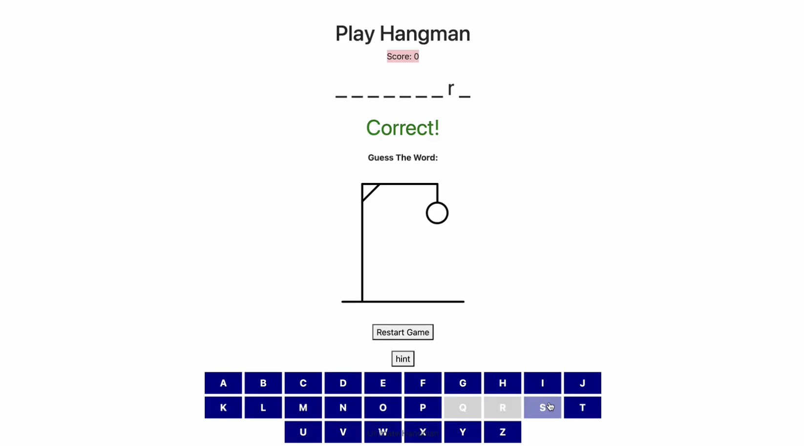
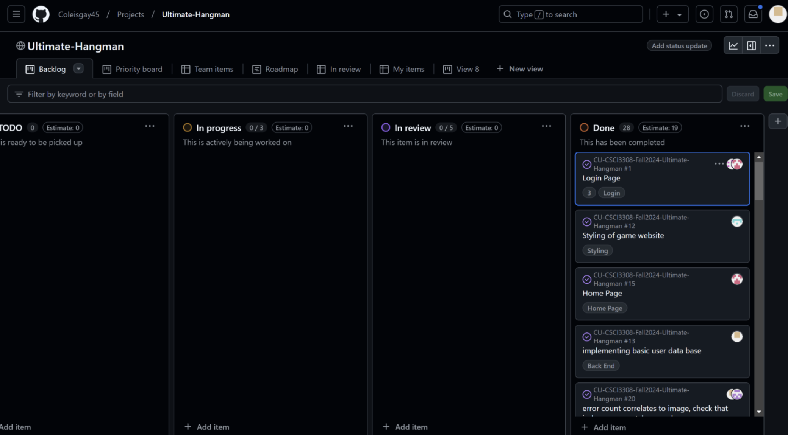

Ultimate Hangman Web Game
A browser-based Hangman game that lets players guess words through an interactive interface. Built as a small team using JavaScript, HTML, and CSS — with GitHub as our shared source of truth.
Goal
Build something small, simple, and fun — and use it as a proving ground for collaborative software development. The point wasn't really Hangman. The point was getting comfortable working in a shared codebase: branches, pull requests, reviewing each other's code, merging cleanly.

How we split the work
We broke the game into three pieces — game logic (state, win/lose, word selection), UI (keyboard, hangman drawing, letter feedback), and polish (animations, sound, styling). Each of us took one and then helped review the others.
What I owned
- Core game logic and state — including how guesses resolved against the hidden word.
- UI wiring — connecting keyboard input to the visual state and rendering correct feedback for each guess.
- Debugging edge cases (repeated letters, case sensitivity, end-game transitions).
Collaboration
This was my first real experience owning a feature branch in a team repo. I learned (the hard way) how to keep commits clean, write useful PR descriptions, and pull main before I started anything — the kind of thing you only internalize after your first painful merge conflict.

Outcome & reflection
We shipped a working game and, more importantly, left the class with a working mental model of how real software teams collaborate. It's also where I started to think about small details in UI as a design problem — the keyboard, the feedback, the end-state — rather than just "frontend work." That habit stuck.